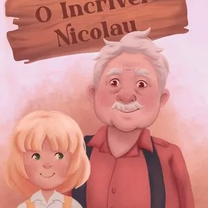
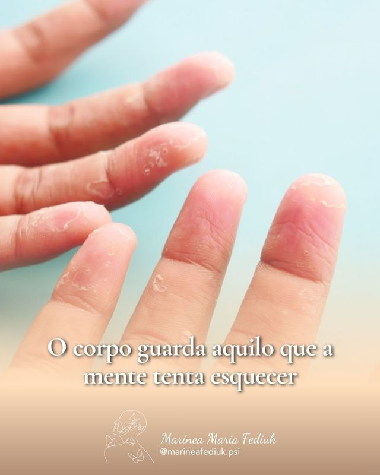
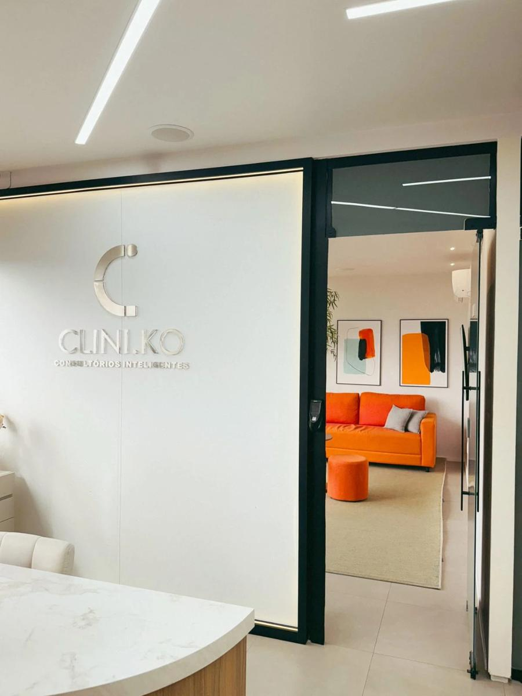
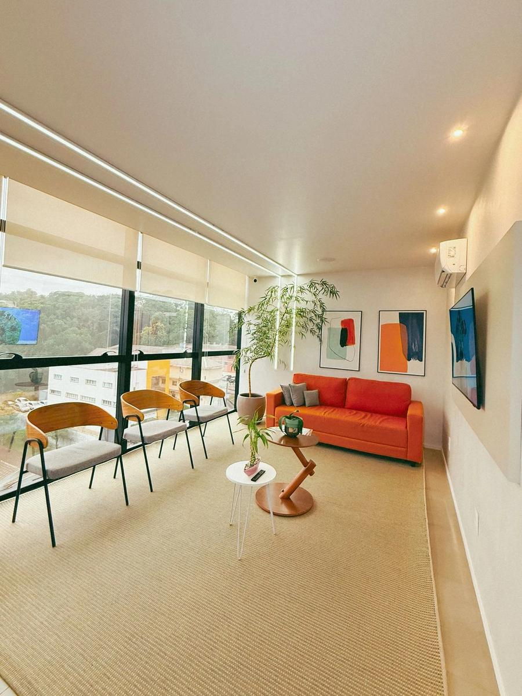
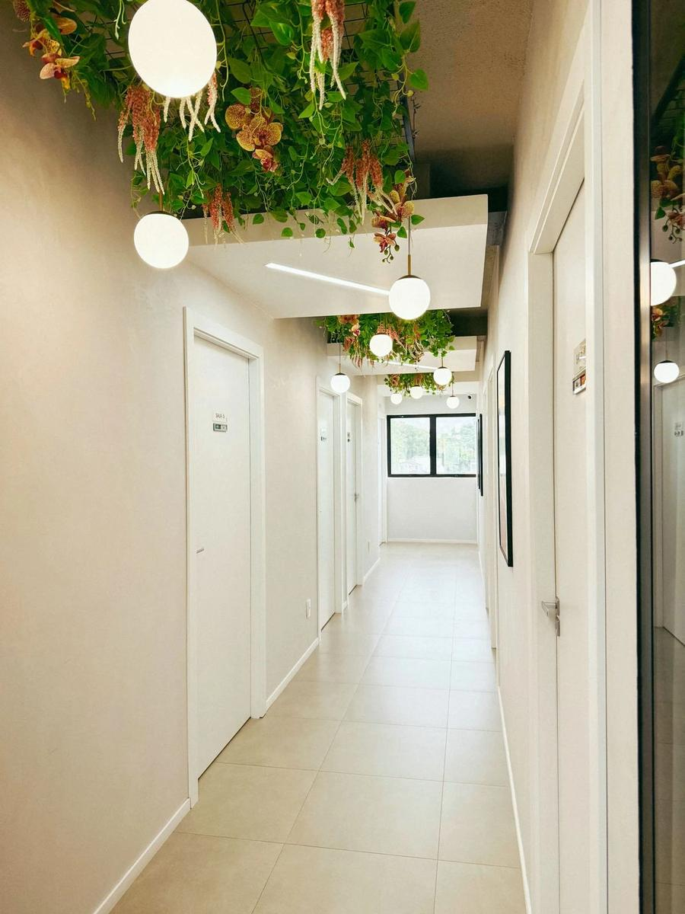
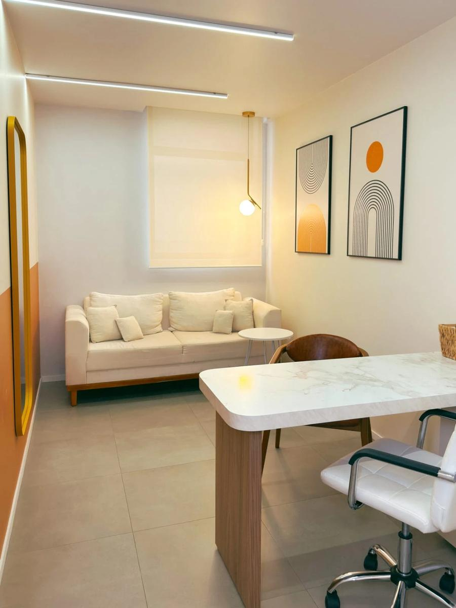
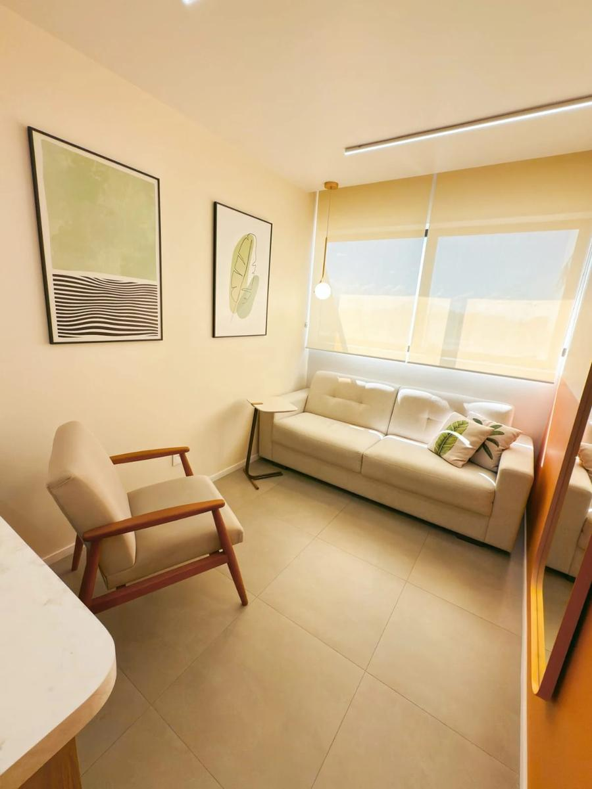
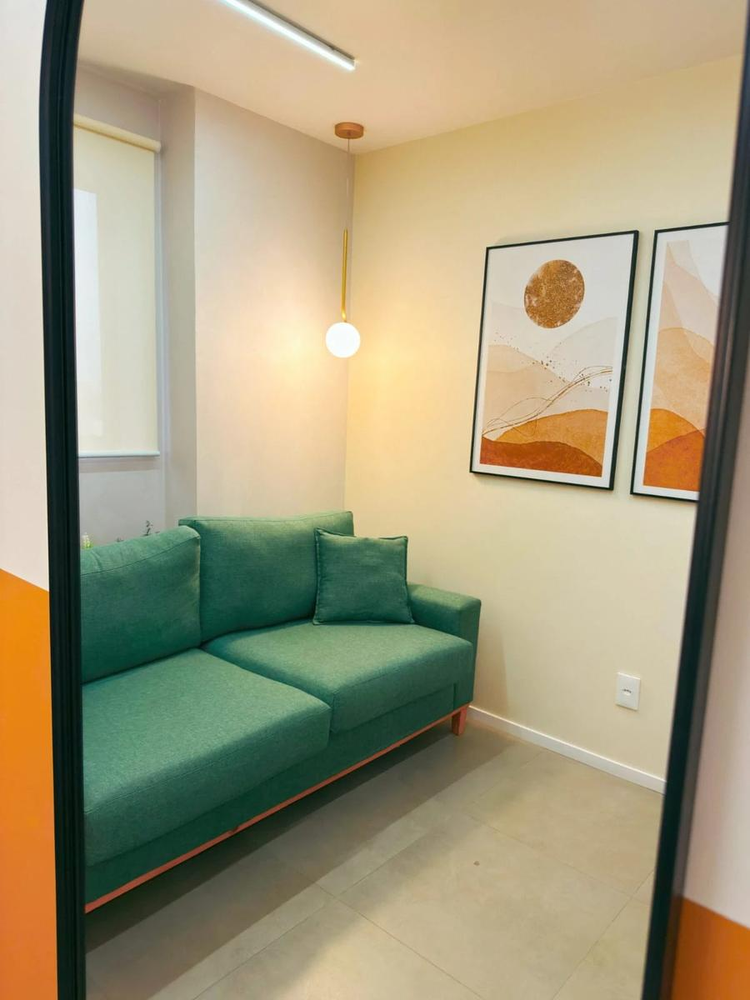
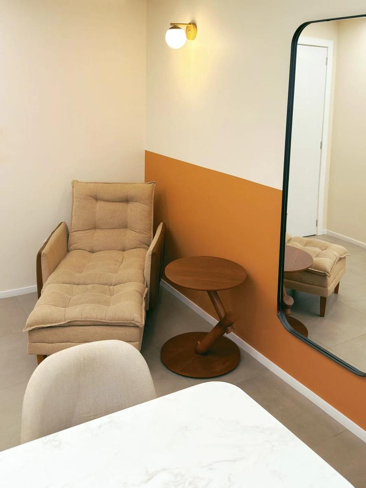

Psicóloga Marínea Maria Fediuk · CRP 12/01526
O que te traz aqui hoje?
Escolha o caminho que mais combina com o seu momento. Cada um leva ao cuidado certo, com escuta, sigilo e respeito ao seu tempo.
- 31 anosde clínica
- Mestre pela UFSCem Psicologia
- Online e presencialJoinville, SC
Como posso ajudar
Toque no que mais se parece com o seu momento.
Psicoterapia
Para quando o passado ainda pesa no presente.
Atendimento para adultos e adolescentes que convivem com traumas, ansiedade, fobias, depressão ou bloqueios. Com EMDR e Brainspotting, no tempo de cada pessoa.
Agendar a primeira sessão- Adultos e adolescentessessões individuais
- Presencial ou onlineem Joinville ou por videochamada
- 31 anos de clínicamais de 41 mil horas de escuta
Mentoria Dona de Si
Para a mulher que já conquistou o mundo lá fora, mas ainda não encontrou a paz dentro de si.
Mentoria individual para mulheres de alta performance que desejam transformar sucesso externo em plenitude interna.
- Mente, corpo e propósitouma abordagem integrativa
- Sigilo e discriçãoatendimento sempre individual
- Online ou presencialno seu ritmo e na sua agenda
Palestras e NR-1
Saúde emocional também é assunto de equipe.
Palestras sobre estresse e coerência cardíaca, liderança consciente, prevenção do esgotamento e relação entre pais e filhos. Consultoria para adequação à NR-1.
Levar para minha empresa- Palestraspara equipes e lideranças
- NR-1riscos psicossociais com olhar humano
- Acompanhamentodo diagnóstico à implementação
Livros e materiais
Para continuar o cuidado em casa.
Livros infantis sobre emoções e relações em família, livros e e-books de psicologia, o kit de coerência cardíaca e um curso de autoconhecimento.
Ver a biblioteca- Livrosinfantis e de psicologia, impressos e digitais
- Kit Coerência Cardíacavídeo, áudio e e-book
- Ajustando sua Rotacurso de autoconhecimento
Quem vai cuidar de você
Marínea Maria Fediuk é psicóloga há 31 anos, mestre em Psicologia pela UFSC e mentora de mulheres de alta performance. Une a ciência do trauma, com EMDR, Brainspotting e Somatic Experiencing, a práticas de regulação do sistema nervoso. É autora de livros infantis e de psicologia, palestrante e implementadora de NR-1 em empresas.
“Uma vez meu paciente, sempre meu paciente.”
Quem já passou pelo consultório tem prioridade para voltar, mesmo anos depois.- 31 anosde prática clínica
- +41 milhoras de atendimento
- EMDR e Brainspottingno cuidado com o trauma
- Mestre pela UFSCem Psicologia
Como começa
- 1
Uma mensagem
Você chama no WhatsApp e conta, do seu jeito, o que procura.
- 2
Um primeiro encontro
Na psicoterapia, a primeira sessão. Na mentoria, uma conversa para entender o seu momento.
- 3
Um caminho construído junto
O acompanhamento segue no seu ritmo, com escuta e cuidado.
Coerência cardíaca: um minuto para respirar
Quando respiração, coração e mente entram em ritmo, o corpo encontra mais equilíbrio. Experimente: inspire por cinco segundos e solte o ar por cinco.
Exercício de demonstração. Para levar a prática para o dia a dia, a Marínea reuniu vídeo, áudio e e-book no Kit de Primeiros Socorros.
Conhecer o kit na bibliotecaPronto(a) para começar?
Métodos de trabalho na Psicoterapia
EMDR e Brainspotting
EMDR
Ajuda o cérebro a reprocessar memórias difíceis, para que deixem de ter o mesmo peso no presente.
Método reconhecido pelo Conselho Federal de Psicologia e recomendado pela OMS.
Brainspotting
Parte da ideia de que onde olhamos afeta o que sentimos. Pontos do campo visual ajudam a acessar e acolher emoções.
Biblioteca

Livro infantilO Incrível Nicolau
Ver na lojaCapa a receber
E-book · AmazonVivendo com Ansiedade
Ver na AmazonEmpregadas domésticas gestantes: os sentidos da maternidade
Ver na editoraLições em tempos de pandemia
Ver na AmazonKit de Primeiros Socorros para Mulheres de Alta Performance
Vídeo-bônus, áudio “SOS Coerência” e e-book “Coerência Cardíaca”.
Quero o kitAjustando sua Rota
Autoconhecimento para escolhas mais conscientes, em dez módulos.
Ver na Hotmart
Autocuidado
O convite do inverno: por que precisamos desacelerar
EmoçõesMorar fora pode despertar dores emocionais profundas

TraumaO corpo guarda aquilo que a mente tenta esquecer
Boas-vindas
Autoconhecimento
Inteligência emocional
Dúvidas frequentes
Respostas a partir do material enviado pela Marínea.
A mentoria é em grupo?
Não. A Dona de Si é sempre individual, para preservar a privacidade de cada mulher.
Qual é a diferença entre mentoria e psicoterapia?
Embora ambas envolvam conversas e reflexões, a mentoria e a psicoterapia são processos com finalidades, métodos e naturezas distintas. Entender essa diferença é fundamental para que você escolha o caminho mais adequado para o seu momento.
Finalidade
A mentoria é um processo orientado para o desenvolvimento de habilidades, competências e objetivos específicos, geralmente ligados à carreira, negócios, liderança ou projetos pessoais. O foco está no aprendizado a partir da experiência de alguém mais experiente em determinada área.
A psicoterapia é um processo clínico voltado para a compreensão e o cuidado de aspectos psicológicos e emocionais, como ansiedade, depressão, traumas, conflitos e padrões de relacionamento que se repetem. O foco está no universo interno e na saúde emocional.
Direção do olhar
A mentoria olha para o futuro e para fora: o que você quer construir, onde quer chegar, quais estratégias precisa desenvolver. Parte de objetivos definidos por você, com o suporte de quem já percorreu um caminho semelhante.
A psicoterapia olha para o presente e para dentro: o que você sente, como seus padrões se formaram, quais experiências moldaram sua forma de estar no mundo. O passado é explorado para compreender o que se repete e abrir espaço para novas formas de lidar com as dificuldades.
Formação do profissional
A psicoterapia é realizada exclusivamente por psicólogos com formação clínica, credenciados pelo Conselho Federal de Psicologia (CFP).
A mentoria pode ser conduzida por profissionais de diversas áreas que tenham experiência comprovada no tema em que atuam. No caso de psicólogos que também atuam como mentores, a prática é permitida desde que a(o) profissional siga rigorosamente os Princípios Fundamentais e artigos do Código de Ética Profissional do Psicólogo (Res. CFP nº 010/2005). Isso significa que, mesmo em uma relação de mentoria, o psicólogo não pode usar técnicas ou métodos que são privativos da Psicologia, nem realizar intervenções de natureza clínica.
Natureza da relação
Na psicoterapia, a relação é assimétrica, mas o saber sobre a própria vida é do paciente. O terapeuta não entrega soluções: ele acompanha um processo de elaboração e autoconhecimento.
Na mentoria, a relação é de tutoria: o mentor compartilha conhecimentos, experiências e perspectivas para ajudar o mentorado a tomar decisões e encurtar caminhos. O saber técnico e a vivência de quem mentora são recursos do processo.
Ética e limites
Quando um psicólogo atua como mentor, é fundamental que deixe muito claro que se trata de um serviço de orientação e desenvolvimento, e não de psicoterapia. Se, durante o processo de mentoria, o profissional identificar que a demanda da pessoa exige cuidados clínicos, é dever ético informar e encaminhar para o atendimento psicológico adequado.
Mentoria e psicoterapia não se substituem. Podem, inclusive, caminhar juntas, mas cada uma tem seu lugar, sua função e seus limites éticos.
Como funciona a conversa inicial da mentoria?
É um espaço de escuta e acolhimento. Você conta o que está vivendo e a Marínea explica como a mentoria pode ajudar.
Atende adolescentes?
Sim. A psicoterapia atende adultos e adolescentes.
O atendimento pode ser online?
Sim. O atendimento online é feito por videochamada segura. O presencial acontece em consultório reservado em Joinville.
Quanto tempo dura cada encontro?
De 50 a 60 minutos. A frequência é definida em conjunto, respeitando sua agenda.
Fiz terapia com a Marínea há muitos anos. Posso voltar?
Sim. Uma vez paciente, sempre paciente: quem já passou pelo consultório tem prioridade para retornar.
Como agendar uma palestra para minha empresa?
Pelo WhatsApp. Conte o tema, o público e a data pretendida.
Onde atendo
Atendimento presencial em Joinville, em um espaço reservado e acolhedor, ou online, por videochamada segura.
- Presencial
- Marques Offices, junto à Clini.Ko
Rua Evaristo da Veiga, 156, 6º andar
Glória, Joinville, SC - Online
- Por videochamada, de qualquer lugar
- Horários
- A confirmar com a Marínea







Quando quiser, é só chamar.
O primeiro contato é pelo WhatsApp, de forma simples e reservada.